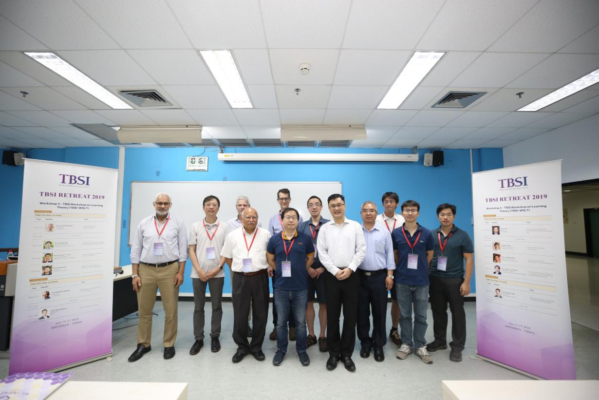

Tsinghua-Berkeley Shenzhen Institute (TBSI) is jointly established by Tsinghua University and University of California, Berkeley under the support of the Shenzhen Municipal Government. It is committed to exploring the cultivation mode in "university-government-enterprise" tripartite cooperation with the concept of "interdisciplinary", "internationalization" and "industrial partnership". With integration of university, government and industry resources, training global technology leaders and future entrepreneurs, TBSI aimed to solve regional and global major issues of engineering and scientific research to provide high-quality talent.
Previous Event
TBSI Workshop on Learning Theory (TBSI-WOLT)
The TBSI Workshop on Learning Theory(TBSI-WOLT) is an annual workshop held during the month of July in Shenzhen, China. It aims to bring together the world’s leading researchers in learning theory and computer science for a discussion about their latest works in a relaxed environment with young researchers. This year the workshop was held between July 15-17 and attracted more than 200 participants. More information regarding the 2019 workshop and speaker list can be found at TBSI-WOLT, 2019.
